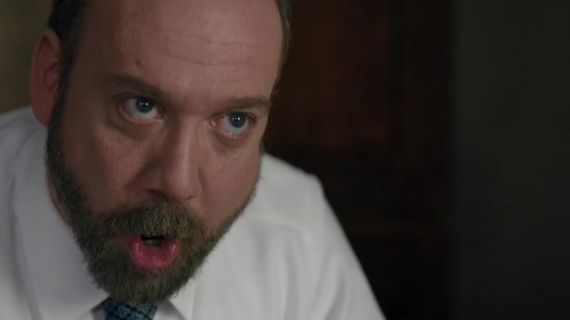

01查克线 / 公权力
联邦检察官办公室
联邦检察官办公室
线索来了，查克却没有立即出手
发生了什么 · 剧情事实SEC 的 Spyros 带来异常交易线索：三家小公司的交易与 Axe 有关联。查克谨慎评估这条线索，不愿贸然挑战一个实力强、声望高的对手。[来源]
这一场为什么重要 · 个人解读
怀疑、调查与足以起诉的证据之间有距离。但他的谨慎也服务于个人事业：81 胜、0 负既是履历，也可能让他回避最难打的案子。开局的张力来自两种要求同时存在——公众期待检察官行动，他则想选一个能赢的时机。
线索尚不足以决胜 → 寻找能削弱对手的位置 · 因果归纳